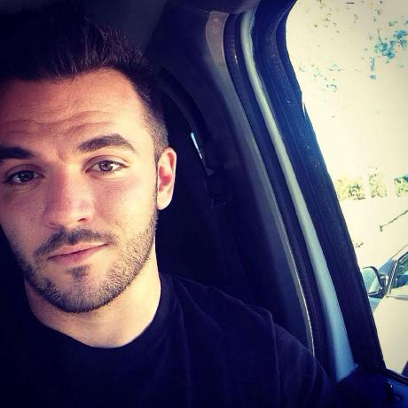

Connect With Me!


 Hello! I am an aspiring developer living in Lake Mary, FL but was born and raised in New Bedford, MA. I have a unique skillset of really dry dad jokes (I am not a father but it never hurts to be prepared) and comparing/contrasting Frozen Yogurt to Ice Cream. In my free time I enjoy kayaking, fishing, getting lost in random sporting goods stores, beach volleyball, and acting like I'm not terrified while walking through haunted houses (among other things).
Upon graduation of college with an AA in Business Admin, I was offered a position to become an estimator for a large landscape company in Orlando. Within the next year and a half, I was able to build my portfolio and become the Head Estimator at the age of 21. Within the next few years, I built my team to grow the construction division to be one of the largest in the state and along with the other divisions we became a Top 100 Landscape Company in the country.
After a few successful years and company growth, my family was offered to become partners with a smaller company on the outskirts of Orlando called Nature’s Care of Orlando. The company was severely struggling and almost out of business but showed real promise. After much thought, we decided to take the offer. Within 3.5 years, we turned this small four hundred-thousand-dollar annual revenue company with a handful of employees into a 3.5-Million-dollar annual revenue company with 48 employees, running satellite offices in Jacksonville, FL and Tampa, FL.
After years of success in the Landscape Construction and Maintenance Industry, I am turning back to my passion of computer technology and web development.